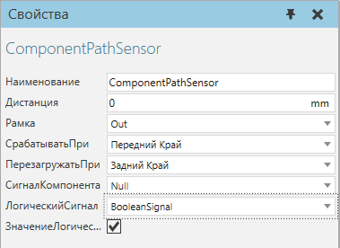

|
Датчик пути позволяет обнаруживать компоненты, движущиеся по пути.

Свойства
Название
|
Описание
|
Наименование
|
Определяет наименование датчика.
|
Рамка
|
Определяет объект Рамка, указанный как физическое местоположение датчика.
|
СрабатыватьПри
|
Определяет режим датчика для обнаружения компонентов.
Передний край - срабатывает, когда первый край компонента достигает датчика.
Нулевая точка - срабатывает, когда исходная точка компонента достигает датчика.
Задний край - срабатывает, когда последний край компонента достигает датчика.
Ни один - отключает датчик.
|
ПерезагружатьПри
|
Определяет режим сброса датчика после обнаружения компонента.
|
СигналКомпонента
|
Определяет компонентный сигнал, используемый для обозначения того, какой компонент был обнаружен датчиком.
|
ЛогическийСигнал
|
Определяет логический сигнал, используемый для подачи сигнала, когда компонент запускает датчик.
|
ЗначениеЛогическогоСигнала
|
Определяет, посылает ли сигнал ЛогическийСигнал. Значение True означает, что датчик вызвал срабатывание компонента. Значение False означает, что датчик либо был сброшен, либо еще не сработал компонентом. Как правило, ЗначениеЛогическогоСигнала используется для отключения использования ЛогическийСигнал в датчике.
|
|